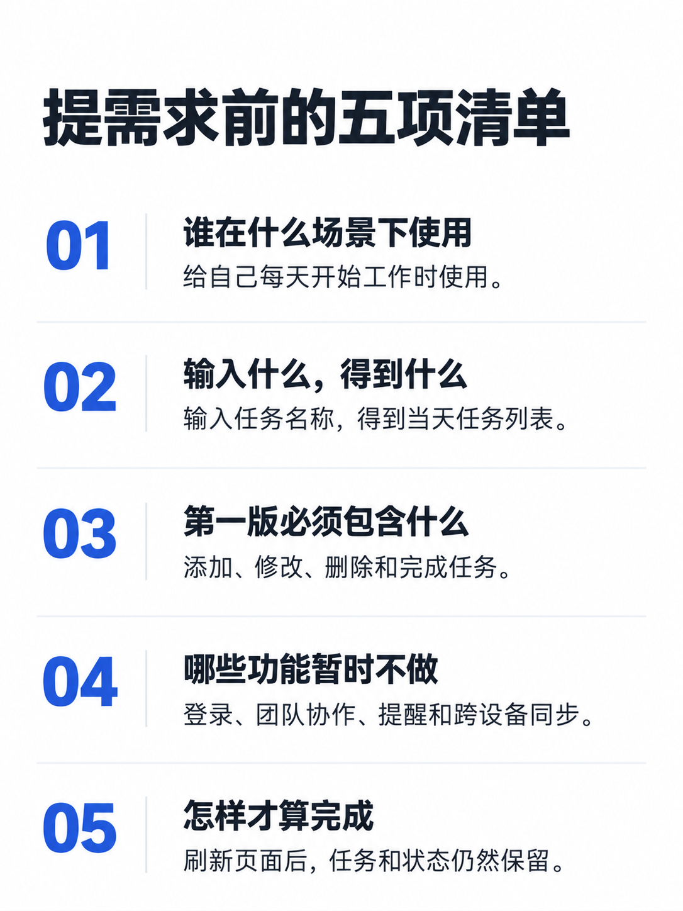
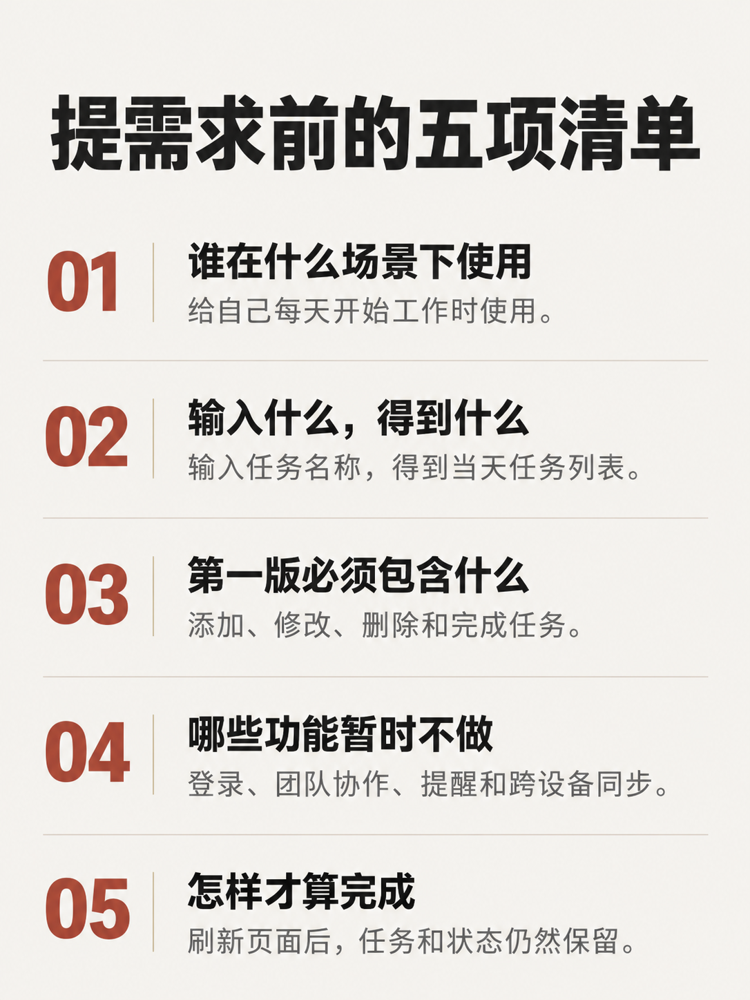

<!doctype html><html lang="zh-CN"><meta charset="utf-8"><meta name="viewport" content="width=device-width,initial-scale=1"><title>清爽文档与杂志图解 · 新旧对照</title><style>*{box-sizing:border-box}body{margin:0;background:#eeefed;color:#242c33;font:16px/1.65 -apple-system,BlinkMacSystemFont,"PingFang SC",sans-serif}main{max-width:1400px;margin:auto;padding:28px}h1{font-size:28px}h2{margin-top:40px}.pair{display:grid;grid-template-columns:repeat(2,minmax(0,1fr));gap:24px}figure{margin:0}figcaption{margin-bottom:12px;font-weight:600}img{display:block;width:100%;height:auto}a{color:#315a91}footer{margin-top:28px}@media(max-width:650px){main{padding:16px}.pair{grid-template-columns:1fr}}</style><main><h1>两种正文主题 · 新旧对照</h1><p>同一份文案，调整字体、信息层级与图解。用户已确认采用清爽文档v3与杂志图解v2，旧图原样保留。</p><p><a href="review.md">复核记录</a> · <a href="README.md">提示词与版本说明</a> · <a href="../../index.html">八款总览</a></p><section><h2>清爽文档</h2><div class="pair"><figure><figcaption>旧版 · 保留历史</figcaption><a href="../../body-clean.png"></a></figure><figure><figcaption>新版 · 已确认使用</figcaption><a href="body-clean-v3.png"></a></figure></div></section><section><h2>杂志图解</h2><div class="pair"><figure><figcaption>旧版 · 保留历史</figcaption><a href="../../body-editorial.png"></a></figure><figure><figcaption>新版 · 已确认使用</figcaption><a href="body-editorial-v2.png"></a></figure></div></section><footer>仅检查生成原图，未核验手机实机与平台上传展示。</footer></main></html>